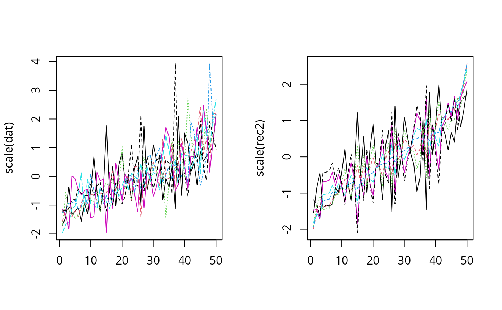
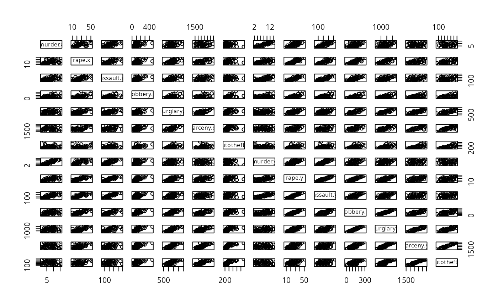
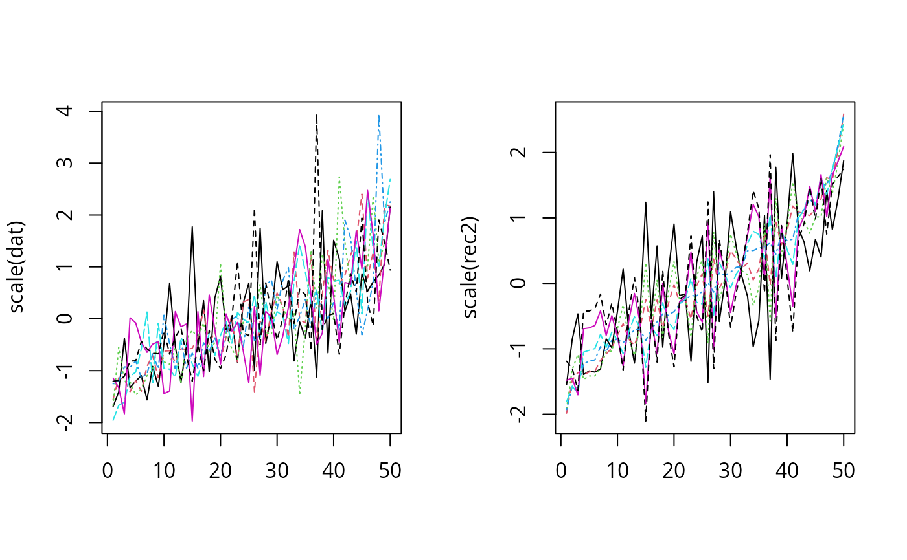
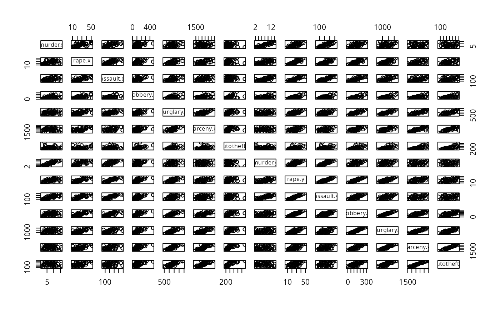

Recover data from principal component analysis based on the first (typically few) components.
recover_pca_data(object, comp = 1)Arguments
Value
A dataframe
Examples
crime <- doBy::crimeRate
rownames(crime) <- crime$state
crime$state <- NULL
o <- order(apply(scale(crime), 1, sum))
dat <- crime[o,]
head(dat)
#> murder rape assault robbery burglary larceny autotheft
#> NorthDakota 0.9 9.0 43.8 13.3 446.1 1843.0 144.7
#> SouthDakota 2.0 13.5 155.7 17.9 570.5 1704.4 147.5
#> WestVirginia 6.0 13.2 90.9 42.2 597.4 1341.7 163.3
#> Iowa 2.3 10.6 89.8 41.2 812.5 2685.1 219.9
#> Wisconsin 2.8 12.9 63.7 52.2 846.9 2614.2 220.7
#> NewHampshire 3.2 10.7 76.0 23.2 1041.7 2343.9 293.4
tail(dat)
#> murder rape assault robbery burglary larceny autotheft
#> Alaska 10.8 51.6 284.0 96.8 1331.7 3369.8 753.3
#> Arizona 9.5 34.2 312.3 138.2 2346.1 4467.4 439.5
#> Florida 10.2 39.6 449.1 187.9 1859.9 3840.5 351.4
#> NewYork 10.7 29.4 319.1 472.6 1728.0 2782.0 745.8
#> California 11.5 49.4 358.0 287.0 2139.4 3499.8 663.5
#> Nevada 15.8 49.1 355.0 323.1 2453.1 4212.6 559.2
matplot(scale(dat), type="l")
 pc1 <- prcomp(dat, scale. = TRUE)
summary(pc1)
#> Importance of components:
#> PC1 PC2 PC3 PC4 PC5 PC6 PC7
#> Standard deviation 2.0285 1.1130 0.8519 0.5625 0.50791 0.47121 0.35222
#> Proportion of Variance 0.5878 0.1770 0.1037 0.0452 0.03685 0.03172 0.01772
#> Cumulative Proportion 0.5878 0.7648 0.8685 0.9137 0.95056 0.98228 1.00000
rec2 <- recover_pca_data(pc1, 2)
pairs(rec2)
par(mfrow=c(1,2))
matplot(scale(dat), type="l")
matplot(scale(rec2), type="l")

j <- merge(dat, rec2, by=0)
pairs(j[,-1])

pc1 <- prcomp(dat, scale. = TRUE)
summary(pc1)
#> Importance of components:
#> PC1 PC2 PC3 PC4 PC5 PC6 PC7
#> Standard deviation 2.0285 1.1130 0.8519 0.5625 0.50791 0.47121 0.35222
#> Proportion of Variance 0.5878 0.1770 0.1037 0.0452 0.03685 0.03172 0.01772
#> Cumulative Proportion 0.5878 0.7648 0.8685 0.9137 0.95056 0.98228 1.00000
rec2 <- recover_pca_data(pc1, 2)
pairs(rec2)
par(mfrow=c(1,2))
matplot(scale(dat), type="l")
matplot(scale(rec2), type="l")

j <- merge(dat, rec2, by=0)
pairs(j[,-1])
